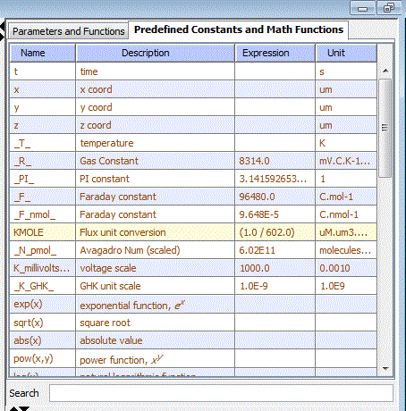

Predefined Constants and Math Functions
The Virtual Cell specifies a set of reserved symbols and constants and a subset of math functions that can be used in expressions and computations.

Clicking the 'Parameters and Functions' item in the 'Navigation' panel on the left of a VCell document displays the Parameters and Functions in the 'View' panel on the right.
This view has 2 tabs. Clicking on the Predefined Constants and Math Functions tab displays a list of the allowed VCell constants and math functions in a table. This table is not editable.
The list of symbols, constants and functions are classified as follows:
Reserved Symbols
- t - time
- x - x coord
- y - y coord
- z - z coord
Reserved Constants
- _T_ - temperature in degree Kelvin
- _PI_ - PI constant = 3.1428571428
- _F_ - Faraday constant = 9.648e4 Coloumb_per_mole
- _F_nmol_ - Faraday constant = 9.648e-5 Coulomb_per_nano-mole
- _N_pmol_ - Avagadro Number (scaled) = 6.02e11 molecules_per_pico-mole
- _K_GHK_ - Goldman-Hodgkin-Katz unit scale = 1e-9
- _R_ - Gas Constant = 8314.0 mVolts_Coulomb_per_Kelvin_per_mole
- K_millivolts_per_volt - voltage scale = 1000
Math Functions
- exp(x) - exponential function, e^x
- sqrt(x) - square root
- abs(x) - absolute value
- pow(x,y) - power function, x^y
- log(x) - natural logarithmic function
- sin(x) - sine function
- cos(x) - cosine function
- tan(x) - tagent function
- asin(x) - inverse since function
- acos(x) - inverse cosine function
- atan(x) - inverse tangent function
- atan2(x,y) - similar to atan(y/x), except places the angle in the correct quadrant
- max(x,y) - maximum of x and y
- min(x,y) - minimum of x and y
- ceil(x) - smallest integral value not less than x
- floor(x) - largest integral value not greater than x
- csc(x) - cosecant function
- cot(x) - cotangent function
- sec(x) - secant function
- acsc(x) - inverse cosecant function
- acot(x) - inverse cotangent function
- asec(x) - inverse secant
- sinh(x) - hyperbolic sine function
- cosh(x) - hyperbolic cosine function
- tanh(x) - hyperbolic tangent function
- csch(x) - hyperbolic cosecant function
- coth(x) - hyperbolic cotangent function
- sech(x) - hyperbolic secant function
- asinh(x) - inverse hyperbolic sine function
- acosh(x) - inverse hyperbolic cosine function
- atanh(x) - inverse hyperbolic tangent function
- acsch(x) - inverse hyperbolic cosecant function
- acoth(x) - inverse hyperbolic cotangent function
- asech(x) - inverse hyperbolic secant function
- factorial(x) - factorial function x!
- log10(x) - base-10 logarithmic function